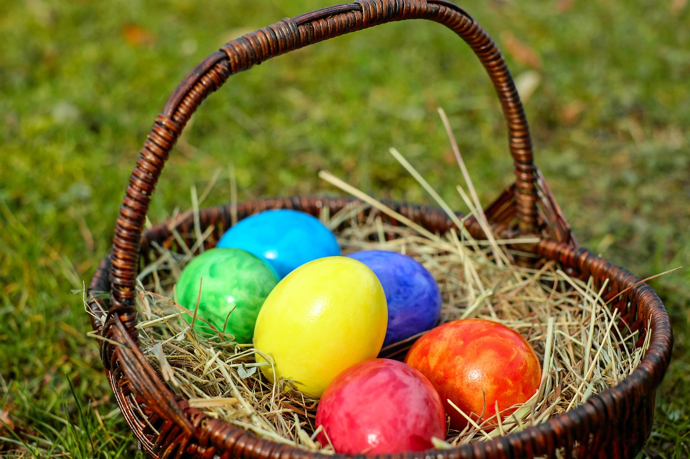
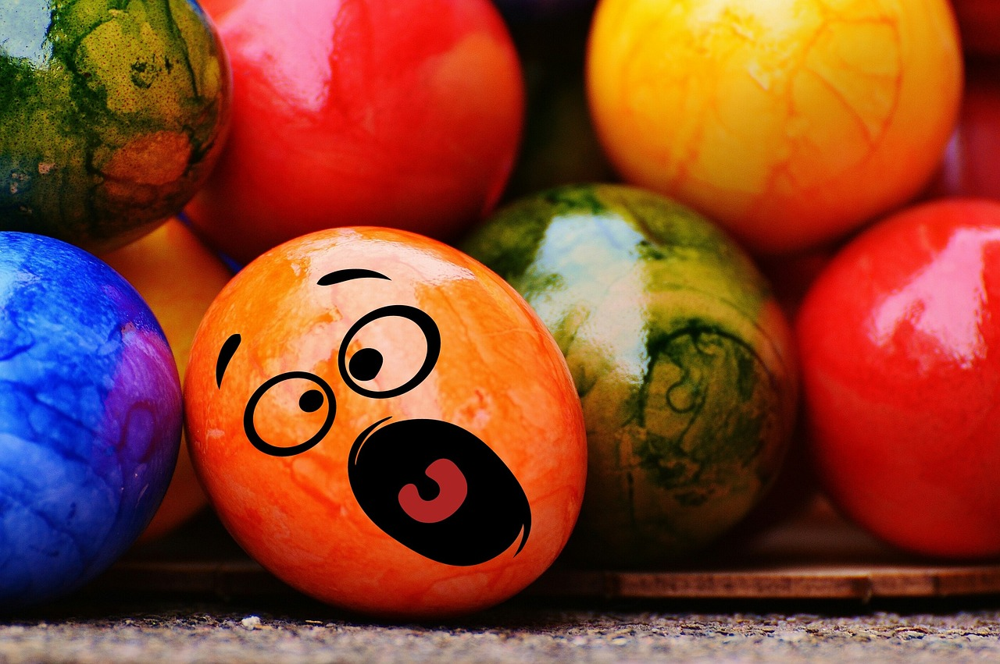

Påske i Norge
Påsken er en av de viktigste høytidene i Norge. Det er en tid for familie, fjellturer og ro – men også en kristen høytid som markerer Jesu oppstandelse.
Hvordan feires påske i Norge?
- 🔸 Påskeferie – Mange nordmenn drar på hytta i fjellet for å nyte naturen, gå på ski og slappe av med familie og venner.
- 🔸 Påskekrim – En unik norsk tradisjon! Folk leser krimbøker eller ser på krimserier på TV. Til og med melkekartonger trykker små krimhistorier i påsken.
- 🔸 Gule dekorasjoner – Gult er påskens farge. Man pynter med gule lys, blomster og kyllinger – symboler på nytt liv.
- 🔸 Påskeegg og godteri – Barn får store påskeegg fylt med sjokolade og godteri. Mange har også "påskeeggjakt" hjemme eller ute i hagen.
- 🔸 Kirkebesøk – Noen går i kirken i påskehelgen for å delta i gudstjenester som markerer lidelsen og oppstandelsen til Jesus.
Påsken i Norge handler om både tro, avslapning og gode påsketradisjoner i vakker natur. ❄️🌼